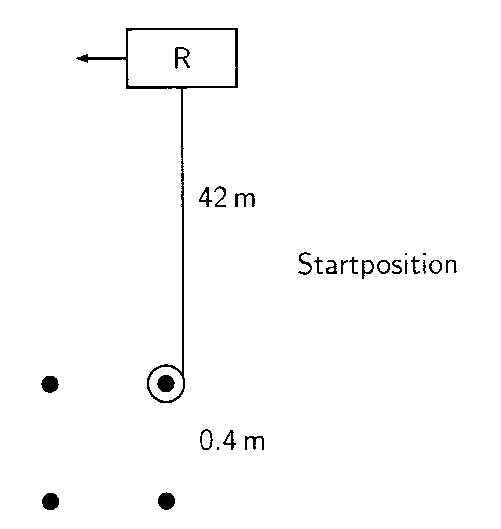
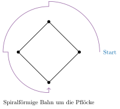
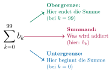

Aufgabe 7.7

- Bei jeder Vierteldrehung verkürzt sich das Seil um die Quadratseite
- Die Bogenlängen bilden eine arithmetische Folge
- Nutzen Sie die Formel für die Summe einer arithmetischen Reihe
- Beachten Sie: Nach 25 Runden sind es 100 Viertelkreise
Problemstellung verstehen:
Gegeben:
- Quadrat mit Seitenlänge $a = 0{,}4$ m
- Anfängliche Seillänge $r_0 = 42$ m
- Gesucht: Weglänge nach 25 Runden (= 100 Viertelkreisen)
Visualisierung der Bewegung:

Die Modellierung - Schritt für Schritt:
Schritt 1: Was passiert bei jeder Vierteldrehung?
Bei jeder Vierteldrehung (90°) wickelt sich das Seil um einen Pflock:
- Das Seil verkürzt sich um die Quadratseite: $a = 0{,}4$ m
- Der Rasenmäher läuft einen Viertelkreisbogen
Schritt 2: Länge der Viertelkreisbögen
Nach $k$ Vierteldrehungen:
- Seillänge (= Radius): $r_k = r_0 - k \cdot a = 42 - 0{,}4k$
- Länge des Viertelkreisbogens: $b_k = \frac{\pi}{2} r_k = \frac{\pi}{2}(42 - 0{,}4k)$
Beispiel - die ersten 4 Viertelkreise (1 Runde):
| $k$ | Radius $r_k$ (m) | Bogenlänge $b_k$ (m) | Berechnung |
| 0 | 42{,}0 | $\frac{\pi}{2} \cdot 42{,}0 = 21\pi$ | 1. Viertelkreis |
| 1 | 41{,}6 | $\frac{\pi}{2} \cdot 41{,}6 = 20{,}8\pi$ | 2. Viertelkreis |
| 2 | 41{,}2 | $\frac{\pi}{2} \cdot 41{,}2 = 20{,}6\pi$ | 3. Viertelkreis |
| 3 | 40{,}8 | $\frac{\pi}{2} \cdot 40{,}8 = 20{,}4\pi$ | 4. Viertelkreis |
Beobachtung: Die Bogenlängen bilden eine arithmetische Folge mit Differenz $-0{,}2\pi$ m!
Schritt 3: Gesamtweg nach 25 Runden berechnen
Das Summenzeichen - Eine wichtige Notation:
Wir müssen 100 Bogenlängen addieren: $$s_{100} = b_0 + b_1 + b_2 + ... + b_{99}$$
Dies schreibt man kompakt mit dem Summenzeichen $\sum$ (grosses griechisches Sigma):
$$s_{100} = \sum_{k=0}^{99} b_k$$
Was bedeutet das Summenzeichen?

Ausgeschrieben bedeutet das: $$\sum_{k=0}^{99} b_k = b_0 + b_1 + b_2 + b_3 + ... + b_{98} + b_{99}$$
Man setzt $k$ nacheinander die Werte von 0 bis 99 ein und addiert alle Ergebnisse!
Schritt 4: Die Berechnung mit dem Summenzeichen
Setzen wir $b_k = \frac{\pi}{2}(42 - 0{,}4k)$ ein:
\begin{align*} s_{100} &= \sum_{k=0}^{99} b_k \\ &= \sum_{k=0}^{99} \frac{\pi}{2}(42 - 0{,}4k) \end{align*}
Rechenregel: Konstanten können vor das Summenzeichen gezogen werden: $$= \frac{\pi}{2} \sum_{k=0}^{99} (42 - 0{,}4k)$$
Rechenregel: Die Summe lässt sich aufteilen: $$= \frac{\pi}{2} \left[\sum_{k=0}^{99} 42 - \sum_{k=0}^{99} 0{,}4k\right]$$
Erste Summe: $\sum_{k=0}^{99} 42$ bedeutet: Addiere 100-mal die Zahl 42 $$\sum_{k=0}^{99} 42 = \underbrace{42 + 42 + ... + 42}_{100\text{-mal}} = 100 \cdot 42 = 4200$$
Zweite Summe: Hier hilft die berühmte Gauss-Formel: $$\sum_{k=0}^{99} k = 0 + 1 + 2 + ... + 99 = \frac{99 \cdot 100}{2} = 4950$$
Also: $$\sum_{k=0}^{99} 0{,}4k = 0{,}4 \sum_{k=0}^{99} k = 0{,}4 \cdot 4950 = 1980$$
Schritt 5: Endergebnis
\begin{align*} s_{100} &= \frac{\pi}{2} [4200 - 1980]\\ &= \frac{\pi}{2} \cdot 2220\\ &= 1110\pi\\ &\approx 1110 \cdot 3{,}14159...\\ &\approx \boxed{3487 \text{ m} \approx 3{,}5 \text{ km}} \end{align*}
Interpretation:
Der Rasenmäher legt nach 25 Runden etwa 3,5 Kilometer zurück!
Das entspricht:
- Ca. 44 Fussballfelder
- Einem gemütlichen Spaziergang von etwa 45 Minuten
- Deutlich mehr als die anfängliche Seillänge von 42 m!
Zusammenfassung - Das Wichtigste:
Im Video: Etappe 5 · Vom Umfang zum Flächeninhalt bei 5:27